Bathroom lighting does more work than almost any other fixture choice in your house.
It has to handle makeup, shaving, reading in the tub, and the 2 a.m. trip down the hall, all from the exact same setup.
Get it wrong, and you end up with either a washed-out glare that flatters nobody, or a dim room that makes every single task harder than it needs to be.
Here's a rundown of the actual fixture types, how to choose between them, and the mistakes genuinely worth avoiding.

The Mistakes That Trip Up Most Bathrooms
Relying on one single overhead fixture for the whole room almost always leaves the mirror under-lit for actual grooming.
Choosing a fixture purely on looks, without checking it's rated for a bathroom's humidity, risks it failing early.
Skipping dimmers removes flexibility you'll probably want at different times of day.
And placing vanity lighting too high above the mirror creates that same harsh shadow problem a single ceiling light causes in the first place.
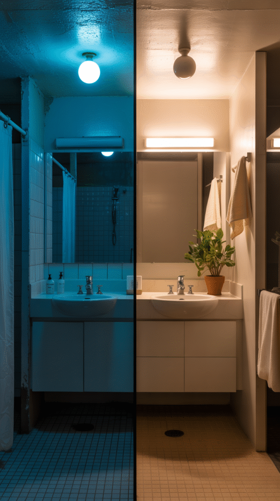
A Few Quick Guidelines Worth Keeping in Mind
Layer at least two fixture types, ambient and task lighting, rather than leaning on just one.
Choose warm-toned bulbs for anywhere near the mirror specifically.
Check the damp or wet rating before you buy anything going near a shower or tub.
And add a dimmer wherever your budget allows for it.
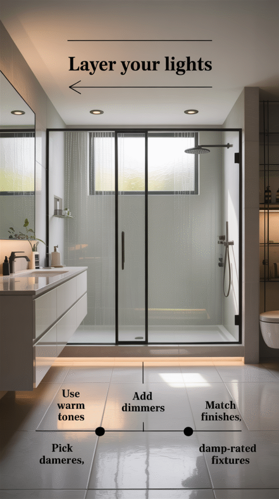
What to Check Before You Buy Anything
A damp or wet-rated label matters for anything installed near a shower or tub. A standard fixture just isn't built for that kind of exposure.
Color temperature affects how the whole room reads. Warm light, somewhere around 2700 to 3000K, flatters skin tone a lot better than a cooler, clinical white.
Dimmability adds real flexibility between a bright task-lighting mode and a softer evening one.
And energy-efficient LED options now cost barely more than standard bulbs, while lasting considerably longer.
How to Actually Decide
Once function is settled, match the fixture finish and shape to your room's existing style. That's what ties the whole space together.
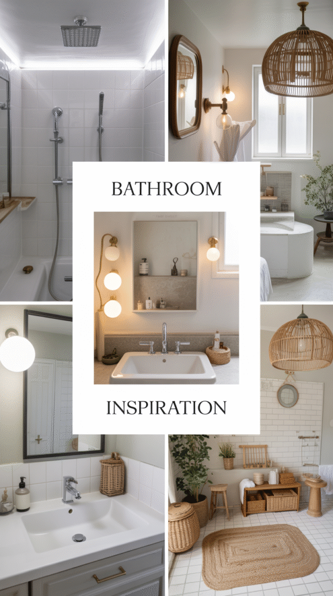
But function comes before style in the decision order every time. A fixture that looks great but doesn't light the mirror properly isn't doing its real job.
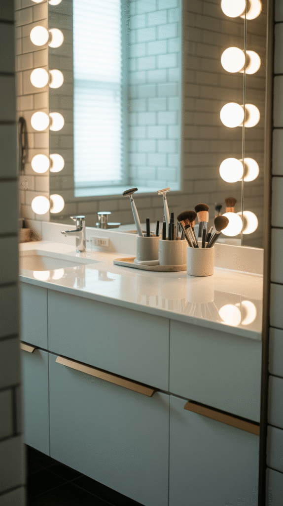
Your bathroom's size and layout set real constraints too. A small bathroom might only need one well-placed fixture, where a bigger one needs a layered combination of several.
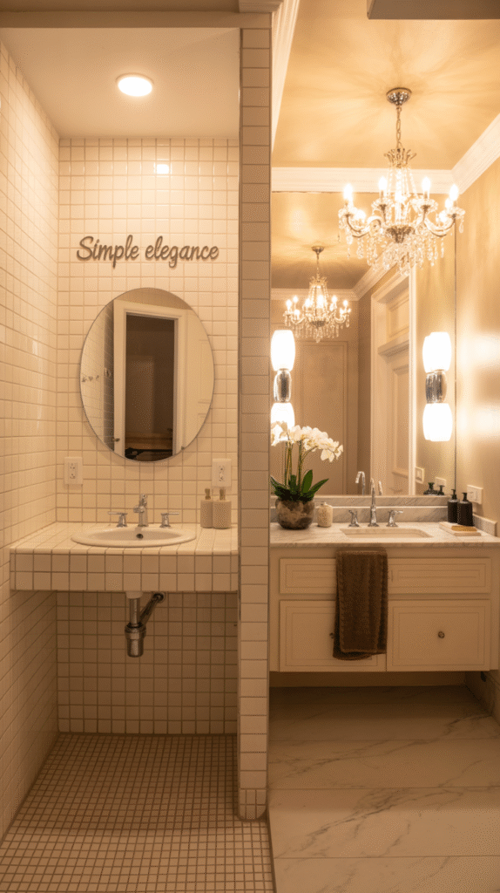
Why the Fixture Choice Actually Matters This Much
Bathroom lighting affects function first and mood second. A mirror with bad lighting makes grooming genuinely harder, not just less pretty to look at.
The right fixture also affects how colors read in the room, including your own skin tone at the mirror, which matters more here than in almost any other room in the house.
A well-lit bathroom feels bigger and more finished without you touching a single other thing in the space.
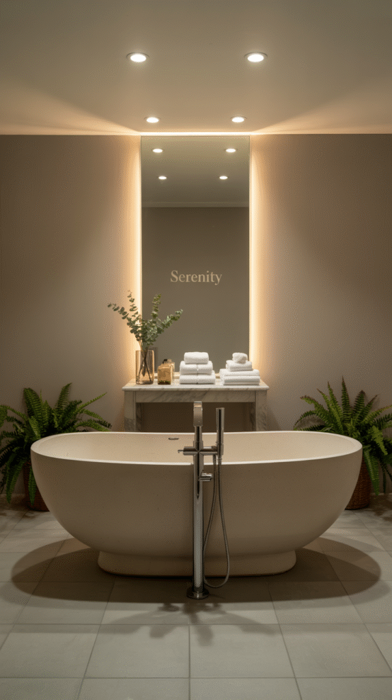
The Fixture Types Worth Knowing
Most bathrooms end up using a mix of these, not just one.
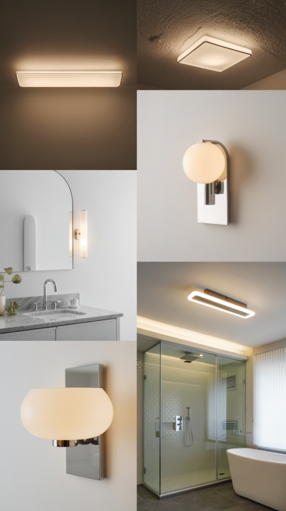
LED Strip Lighting
Thin LED strips work well under cabinets, around a mirror frame, or along a tub edge for subtle accent lighting.
This fixture type is less about primary lighting and more about mood and detail. Think a soft glow for a nighttime bathroom trip without blasting on full brightness.
Dimmable, color-adjustable strips add flexibility a fixed fixture just can't match.
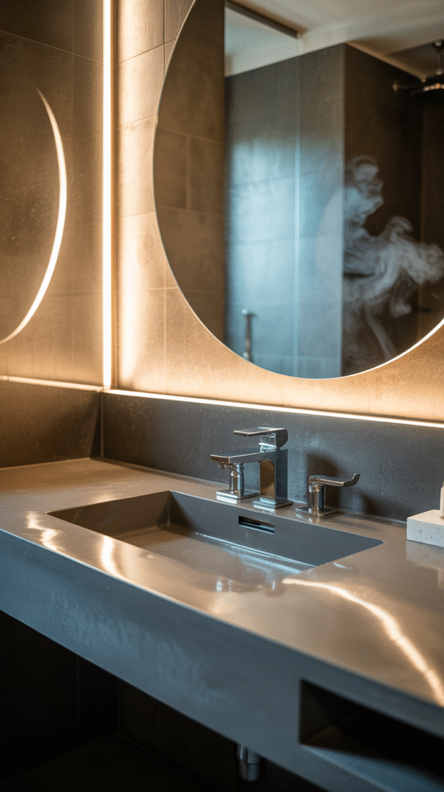
Recessed Lighting
Set flush into the ceiling, recessed lights provide clean, unobtrusive general lighting without any visible fixture at all.
This suits a modern bathroom where visible light fixtures would compete with an otherwise minimal design.
Multiple recessed lights spread evenly across the ceiling avoid the harsh single-point shadow that one lone fixture tends to create.
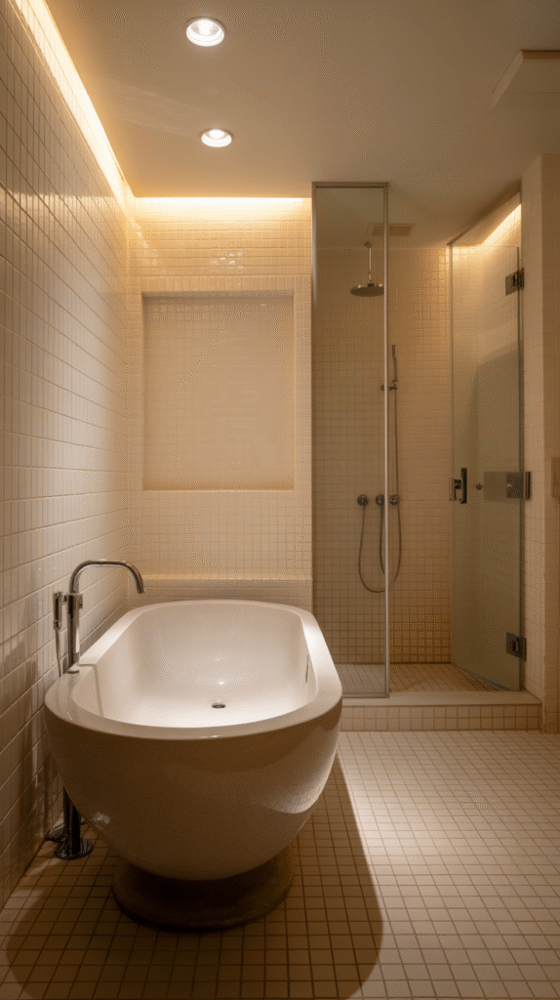
Wall Sconces
Sconces add both function and style, often flanking a mirror or marking a specific zone like a tub or shower entry.
They work especially well paired with vanity lighting, filling in shadows a single overhead source tends to leave behind.
This is also one of the more decorative fixture types here, doing real visual work beyond pure function.
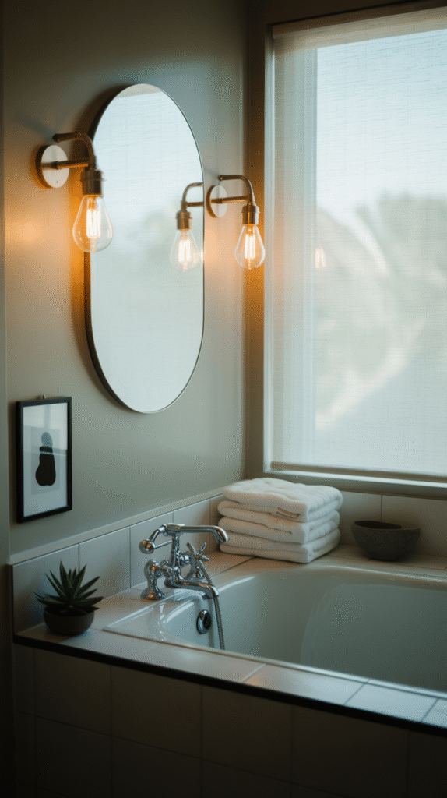
Ceiling Lights
A central ceiling fixture provides the room's general ambient light, covering tasks that don't need the focused brightness vanity lighting offers.
This is the baseline every bathroom needs, even when other fixture types are handling the detail work elsewhere.
A flush or semi-flush mount keeps the fixture out of the way in a room with limited ceiling height.
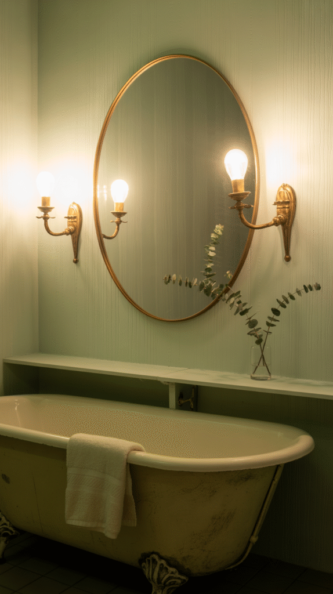
Vanity Lights
Mounted directly above or beside the mirror, vanity lights handle the detail work. Makeup, shaving, skincare, all of it.
Side-mounted fixtures reduce the shadows a single overhead vanity light tends to cast across your face.
This is the fixture most worth getting right first, since it affects your daily grooming tasks directly, every single morning.
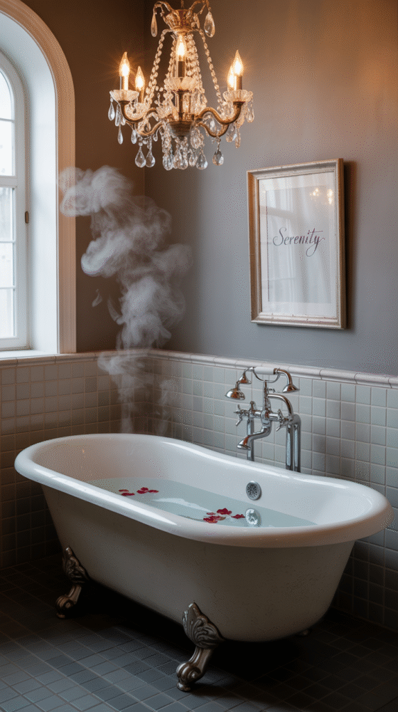
Start With Function, Let Style Follow
The right bathroom lighting setup is rarely one single fixture. It's a combination that covers both daily function and overall mood.
Start with the vanity lighting, since that's what affects your daily grooming tasks the most directly.
Layer in ceiling or recessed lighting for general coverage, then add sconces or LED strips for the finishing touch.
Get the function right first, and every style decision after that gets a lot easier.